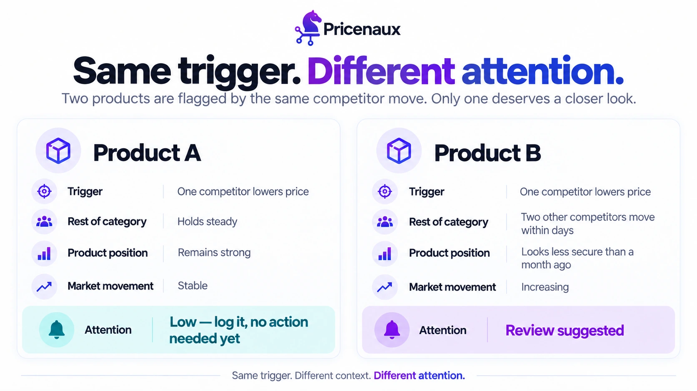
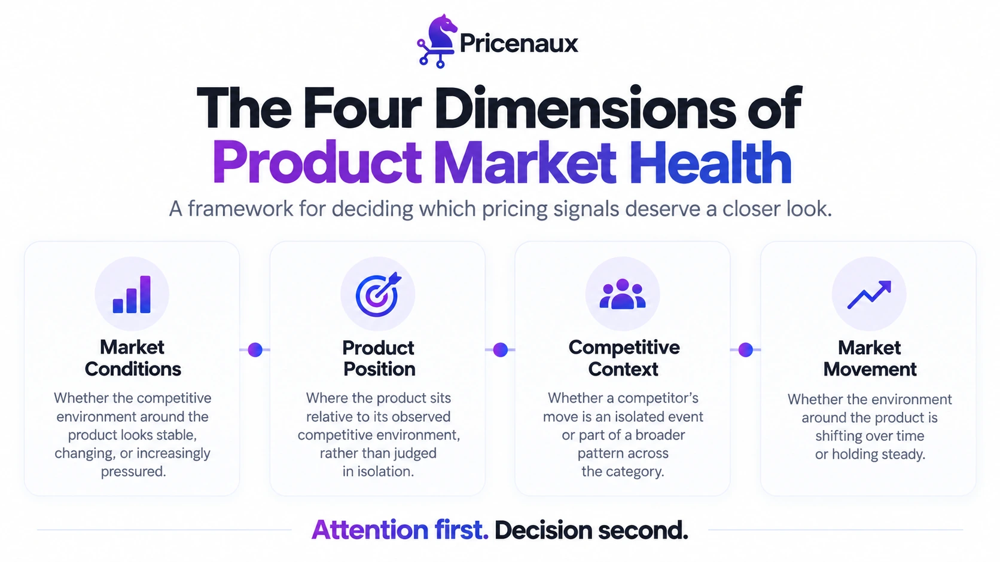

Nermin Sad · CEO & Co-founder
Nermin Sad · CEO & Co-founder
Figure 1. The same competitor move can deserve very different levels of attention depending on the surrounding market context.
If you’ve been reading this series, you already know the Tuesday morning scenario: a competitor cuts the price on one of your best-sellers, someone on the team notices, and the question comes up — do we follow?
Our last post walked through how to answer that, with a decision loop that moves from Signal to Context to Constraints to Decision to Monitor, then back around to the next signal. We still stand behind it.
But re-reading it now, it quietly assumes something: that the signal already has your attention.
That’s a fair assumption for a five-SKU store. It stops being fair somewhere around a few hundred SKUs spread across Amazon and Shopify. A real Tuesday at that size rarely hands you one competitor move to think about. It hands you a dozen small price changes, a couple of Buy Box flickers, a category that’s quietly gotten more competitive, and a handful of products drifting in ways nobody’s flagged yet — none of it loud enough to force a response, all of it arriving at once.
Which one deserves five minutes of your day?
That question comes before Match, Hold, Wait, Partial Move, or Reposition. Most pricing conversations skip straight past it.
1. The Attention Problem Pricing Frameworks Don’t Talk About
Decision frameworks are built to answer a question someone has already asked: something changed — now what?
They’re not built to tell you which of the dozens of things that changed today was worth asking about in the first place.
That gap widens as catalogs grow. Our early Pricing Audit responses point in the same direction: nearly half the merchants sold on both Shopify and Amazon — two channels that move on different schedules, under different competitive pressure, and that can drift apart without anyone deciding they should. It’s a small, self-selected sample, so we treat that as directional rather than representative, and we flag it every time we cite it.
There’s broader evidence that the underlying pattern isn’t unique to our own audit responses. Jungle Scout’s 2023 State of the Amazon Seller survey found that 61% of more than 2,000 Amazon sellers already sold on at least one other platform. It’s a 2023 snapshot, not a current market estimate, and we haven’t come across a more recent public figure — but it reinforces the operational point: the more channels and SKUs a business runs, the more signals arrive every day, and the harder it gets to give each one the attention it deserves.
Most merchants respond to that pressure in one of two ways, and both create problems.
The first is trying to review everything. It doesn’t scale — a team that treats every competitor twitch as equally important either burns hours on signals that never needed a response, or, more often, quietly stops looking as closely as it used to, because nobody has time to review dozens of small changes every day forever.
The second is to only look when something is loud enough to be impossible to miss: a lost Buy Box, a visible drop in conversion, a customer complaint. That works right up until the quiet version of the problem catches up with you. We’ve written before about how margin erodes exactly this way — not through one dramatic mistake, but through the slow accumulation of decisions made too late, on signals nobody was watching closely enough to catch early.
Neither approach is a strategy. Both are just workarounds for not having a way to tell, in advance, which signals actually matter.
2. Context Before a Decision: What Product Market Health Actually Does
This is the problem Product Market Health was built to address — not to replace the decision loop, but to sit in front of it.
The idea is straightforward: a price change, on its own, is an observation. It doesn’t tell you whether it’s meaningful until you understand the environment it happened in. Product Market Health adds that environment, so a team can tell the difference between a product that needs a closer look and one that doesn’t — before it becomes a pricing conversation at all.
At a high level, the workflow is simple:
Observe. Something changes around a monitored product — a competitor’s price, a shift in market activity, a change in the product’s own position relative to its category.
Interpret. Pricenaux places that change in context: is this happening in isolation, or as part of a broader shift in the product’s competitive environment?
Decide. The resulting view helps a team decide whether the product deserves closer review before any pricing action is considered — not what that action should be.
That last distinction matters. A “review suggested†flag is a prompt to look, not a command to act. What happens after that look still depends on demand sensitivity, product performance, profitability, brand positioning, and the constraints a business has already set for itself — the same commercial context that shapes any pricing decision. Product Market Health decides what gets your attention. The decision loop still decides what you do about it.
3. Four Things Worth Knowing Before You Decide Anything
Product Market Health brings together four dimensions of context around a product:

Figure 2. Product Market Health brings four kinds of context together before a signal becomes a pricing decision.
| Dimension | What it tells you |
|---|---|
| Market Conditions | Whether the competitive environment around the product looks stable, changing, or increasingly pressured. |
| Product Position | Where the product sits relative to its observed competitive environment, rather than judged in isolation. |
| Competitive Context | Whether a competitor’s move is an isolated event or part of a broader pattern across the category. |
| Market Movement | Whether the environment around the product is shifting over time or holding steady. |
None of these four questions is new on its own. Most merchants already ask some version of them, informally, about their best-selling products. What’s different is asking them systematically, across an entire catalog, before a signal turns into a fire drill — rather than reconstructing the answer after conversion has already started to slip.
4. An Illustrative Example
The example below is illustrative and simplified — not real customer or audit data, and not a disclosure of how the underlying scoring works. It’s here to show the shape of the triage, not the mechanics behind it.
Consider two products in the same category, both flagged because a competitor moved.
| Product A | Product B | |
|---|---|---|
| Trigger | One competitor lowers price | One competitor lowers price |
| Rest of category | Holds steady | Two other competitors move within days |
| Product position | Remains strong | Looks less secure than a month ago |
| Market movement | Stable | Increasing |
| Attention | Low — log it, no action needed yet | Review suggested |
Same trigger — a competitor price drop — two different outcomes. Product A doesn’t need five minutes of anyone’s day yet. Product B does.
This is the same principle behind the five responses we described in our last post — match, hold, wait, partial move, or reposition — just applied one step earlier. Product Market Health doesn’t choose between those five. It decides which products even reach the point of choosing.
5. Where This Sits in the Decision Loop
If you’ve read the rest of this series, you’ll recognize the shape: Signal, Context, Constraints, Decision, Monitor.
Product Market Health lives at the front of that loop, not inside it. It’s the layer that decides which signals are worth carrying into Context and Constraints at all. For a five-SKU store reviewing every signal by hand, that layer may not add much — there isn’t enough noise to sort through. For a retailer running dozens of Amazon ASINs and Shopify SKUs at once, it’s the difference between a team that reviews what matters and a team that reviews whatever happened to be loudest.
That difference compounds. A team that concentrates its attention on the handful of products that actually need review makes better decisions on those than a team that spreads the same attention thin across the rest of the catalog.
6. Decision Support, Not Automation
We’ll say this plainly, because it matters: Product Market Health does not set a price, and a “review suggested†flag is not an instruction to discount.
A changing market environment does not automatically mean a product should move. The right response still depends on the same commercial factors that always determine a pricing decision — margin, demand, positioning, inventory, and what the business is actually trying to protect. Product Market Health’s job ends at “this deserves a closer look.†Everything after that is still a decision a person makes, with the context now in front of them instead of buried across four different tabs.
There’s a simple way to tell the two apart: automation executes rules whether or not the moment actually calls for it. Intelligence tells you what’s worth your attention, and leaves the decision about what to do with it to you.
Founder Reflection
When we started building Pricenaux, I thought the hard part would be the pricing math — getting to the right number. It turned out the harder problem often comes earlier: noticing, in time, that a decision may be needed at all.
Merchants we talk to are rarely short on discipline. Many already track margins, check competitors, and have some version of a review cadence. What becomes much harder as catalogs grow is knowing which of today’s dozens of small changes actually deserves that discipline right now.
That’s a different problem from the one most pricing tools are built to solve. It’s not “what price should this be.†It’s “should anyone even be looking at this today.†Get that answer wrong often enough, in either direction, and it stops mattering how good the rest of your decision-making is — you’re either spending your attention on the wrong things, or not spending it at all.
— Nermin Sad, CEO & Co-founder, Pricenaux
Final Thought
The next time your team reviews pricing signals, don’t start with “what should we do?†Start with “what actually deserves our attention today, and what can wait?â€
That question is easy to ask and hard to answer consistently across a real catalog — which is exactly why it needs its own layer, not just good intentions.
If you want to see how Product Market Health puts that layer in front of your own catalog, take a look at how it works.
And if you’re not sure how many of your own signals are getting the attention they deserve in the first place, the Pricenaux Free Pricing Audit takes about two minutes and is a quick second stop.
Start the Free Pricing Audit →
When your catalog sends you dozens of signals tomorrow, will your team know which ones matter — or will it just react to whichever one was loudest?
See how Product Market Health works
Understand which pricing signals deserve a closer look before they become pricing decisions.